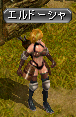
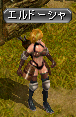

クエ概要、およびクエを受けるための条件
◆Ｌｖ９００で受諾可。◆メインクエ、１日クエ、限界突破クエ以外の全てのクエを終わらせておく必要がある。
◆４次転生でリンケンのボルファーで終わったルートの続きである。
◆時間の目安としては３０分程度。
◆クエ進行は以下の通り。
| クエスト名 | 報酬EXP （スフィア有） |
|
|---|---|---|
| １ | 原因不明の病 | |
| ↓ | ||
| ２ | 裏切られし信頼 | |
| ↓ | ||
| ３ | 深い誤解 | |
| ↓ | ||
| ４ | 終わり無き人間の欲望 |
５次転生時の注意点
◆転生直後、振っていたステ、スキルの再振りはされず、追加分（各５００ポイント）が与えられる。５次転生の特典
５次転生をすることにより、以下の特典が得られる。※この項は編集中です
① ステ、スキルボーナス
それぞれ＋５００のボーナスがもらえる。無転の状態から数えると、１次～４次転生時にもらえる＋１０００ボーナスと合わせて計＋１５００ずつ得ることになる。
② 指の装備出来る箇所
４次転生時と変わらず、計１０箇所。ただし、銀行、ポタ、マップ製作者、モンスター鑑別、５次転生、レポートクエ１を全て終わらせた状態で
古都冒険家協会のクロロ（３５，４８）に話しかける事により、
左上の指輪スロットが５次転生専用スロットに変化する。
５次転生専用スロットにつけた指は、装備個数制限の影響を受けない。
③ 転生者称号
転生者称号はLv３のまま。自分自身、およびPTメンバーに対し、狩りでのMOB経験値にボーナスがつく。
Lv３では、
◆自分自身のEXPボーナス＋20％ （ただし自分自身のLvが600以上になると無効）
◆PTメンバーのEXPボーナス＋10％ （PTメンバーのLvに関係なく取得）
④ 「暁の封印玉」使用可能回数増加
１回増えて計５回行う事ができるようになる。転生１回につき、使用可能回数が１回増える。暁の封印玉
課金アイテム（\1,200）。アイテムモールの「スペシャル」にて購入可。
◆装備要求Lv680以下のアイテムが対象。以前はLv400以下が対象だったが、2012/11/20の大型UPでLv680以下に変更になった。
◆インフィニティ武器、セットアイテムには使用不可。不滅、FAなどの680武器には使用可。
◆使用したアイテムは、銀行取引も含め全ての取引が不可になる。すなわちそのキャラクターに持たせっぱなしになる。
◆暁した装備に対し、OPのエンチャ、解除は可。鏡、異次元は不可。
 
